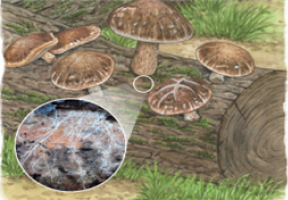

1번
생물의 특징과 그 생물이 우리 생활에 미치는 영향을 나타낸 것입니다. 빈칸에 들어갈 알맞은 말을 고르세요.
개요
생물의 특징

▪ 보통 실처럼 가늘고 긴가닥이 모여서 이루어져 있다.
▪ 스스로 양분을 만들지 못해서 죽은 생물이나 다른 생물에서 양분을 얻어 살아간다.
우리 생활에 미치는 영향
▪ 일부 버섯은 요리하여 먹을 수 있다.
▪ 독이 있는 버섯을 잘못 먹으면 생명이 위독해지기도 한다.
위 설명과 같은 생물을
선택하세요.
균류
세균
원생생물
(이)라고 합니다.